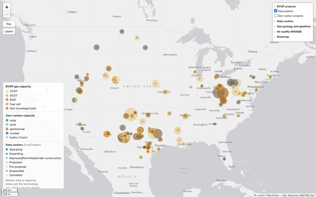

Data center power plants
Interactive map of power plants being build for data centers ("Bring Your Own Power", or BYOP). See where these projects are being built relative to nearby gas basins, pipelines, air quality nonattainment areas and data centers.
Open map →